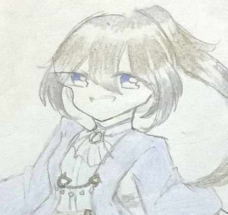
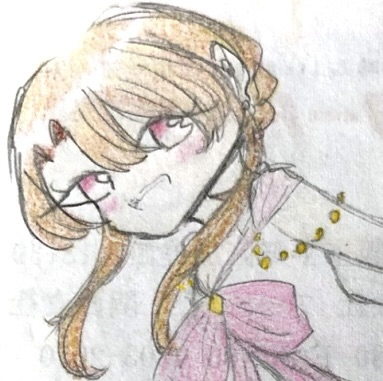
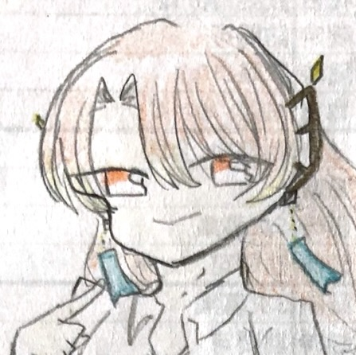

my
origimal
characters

NEWS
- 2024.11.29キャラクターの設定を更新しました
- 2024.11.22新キャラクターを追加しました
- 2024.11.8個人的お気に入りキャラクター一覧作りました
- 2024.11.1サイト作りました
CONCEPT

オリジナルキャラクターの
世界観について
世界観について
この世界には15の種族がいる。それぞれの種族には神がおり、その種族を管理している。 中には神の血を濃く受け継いだ末裔がいる。種族にはそれぞれ特徴があり、 中には仲の悪い種族、仲のいい種族という相性が存在する。

オリジナルキャラクターの
設定などについて
設定などについて
たくさんの種族、キャラクターがいる中で、多種族同士の関わりをメインとして考えている。 そして種族の違いだけではなく、身分の違い、性格の違いなど、そういった価値観などにとらわれ てしまうような人々のお話を考えている。
RACE

神聖種
セイクリット
モノの理を司る神。理を司っている割にはあまり仕事がない神もいる。(役割それぞれ)神格がないものには見えない。(仮の姿になればヒトにもみることができる)
龍神種
ドラゴディア
何か司っている龍もいれば自由気ままに生きている龍もいる。基本的にマイペースなものが多く、寿命が長く人と時間の流れが違うため自由なものが多い。- 
天翼種
プテリュクス
神の世界の門を守る種族。神の使いでもある。基本里から出ることがなく、観測者と言われることもある。 - 
宇宙種
ユニベア
宇宙で暮らしている種族。宇宙では何百年と生きることか出来るが、地球上では数年しか生きることができない。(宇宙生まれが地球に来ると数年、地球生まれのユニベアは人と同じ寿命。) 
血鬼種
ダラーオグル
戦闘を好む種族。過去の大戦により絶滅危惧種(角のある者)だったが、生き残った血鬼種は戦闘をやめ、繁栄し今では角のない血鬼種が多くいる。
妖魔種
プニューマ
魂を操る種族。ほなの種族からは悪霊も操っているのではないかとあまりいいイメージを持たれていない。実際はヒトに被害を出さないよう尽力している人思いな種族。他の種族と仲良くしたいと思っている。
悪魔種
トイフェル
魔力が高い種族。魔界に住んでいて、戦闘が好きなものが多く、ずる賢い。基本的に友好な者が少ない。森精種とはあまり仲が良くない(ライバル関係)。天翼種とも仲があまり良くない。
森精種
エルフ
魔力が1番強い種族。複雑な術などを扱う。悪魔種とあまり仲が良くないことは多い。寿命が長いためマイペースなものが多い。氷結種と交流をしている。
獣人種
ベスティア
獣の姿に変化できる種族。一部獣の部分がある。一つの里に獣人は皆住んでいる。ヒトより寿命が短い。(60年くらいが平均)
人類種
ヒューマニア
基本となる種族。世界で人口が1番多く、大体の基準となっている。文明が一番発展している。
幻想種
ヴィジィオン
人により生み出された種族。造り主とのリンクをさせることで生命が芽吹く。作り主の部位をリンクさせるため、幻想種がなくなるとその部位は消滅する。(人体錬成に近い)
妖精種
フェアリー
素早さが高く、空中戦はとても強い。体力は少なめ。上級者、中級者、初心者があり、上級者は体重操作と羽を極意化させた者、中級者は体重操作のみ極意化させた者、初心者は両方極意化していない者がいる。
海精種
セイレーン
海の中でしか暮らせない種族。数は少ないが陸でも暮らせる神格者もいる(足生えてるタイプ)。その者はセイレーンの中で神として崇められる。女が多く、男は希少。
氷結種
ゲフリーレン
暑さと寒さが人と逆の感じ方をする種族。氷を操るのを得意とする。感情が乏しい(冷酷な)者が多い。森精種との交流を大事にしている。
人類種
ヒューマン
特殊魔法が使えない人。特殊魔法が使えないため、他の種族と争いになると確実に不利なので、神威(かむい)国という鎖国した国に住んでいる。神威国は他の国とは関係を全て断ち、多種族を絶対に入れないようにしている。